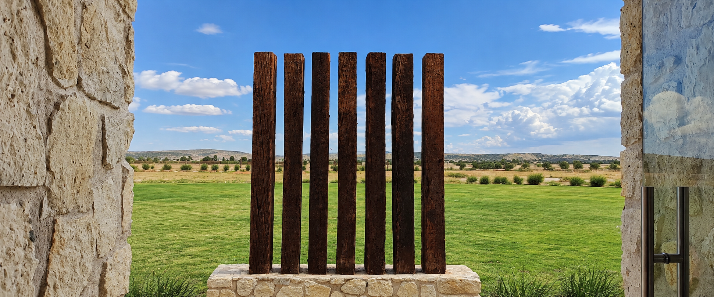
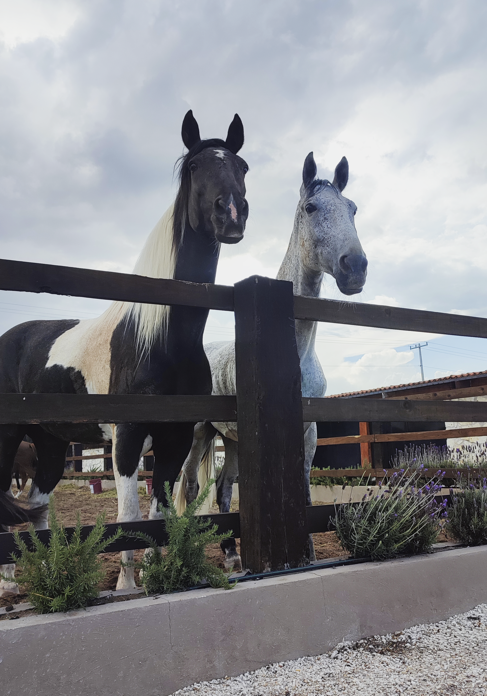
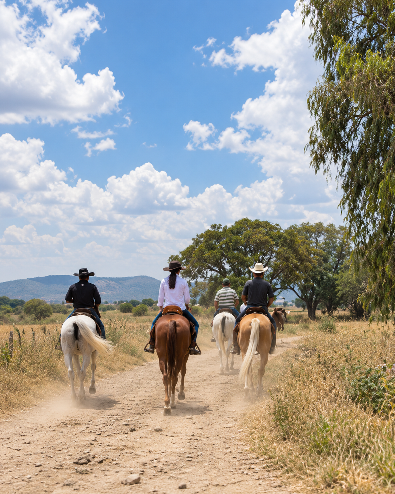
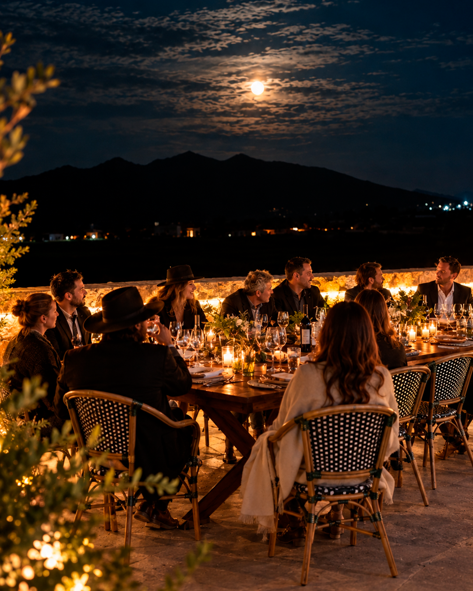
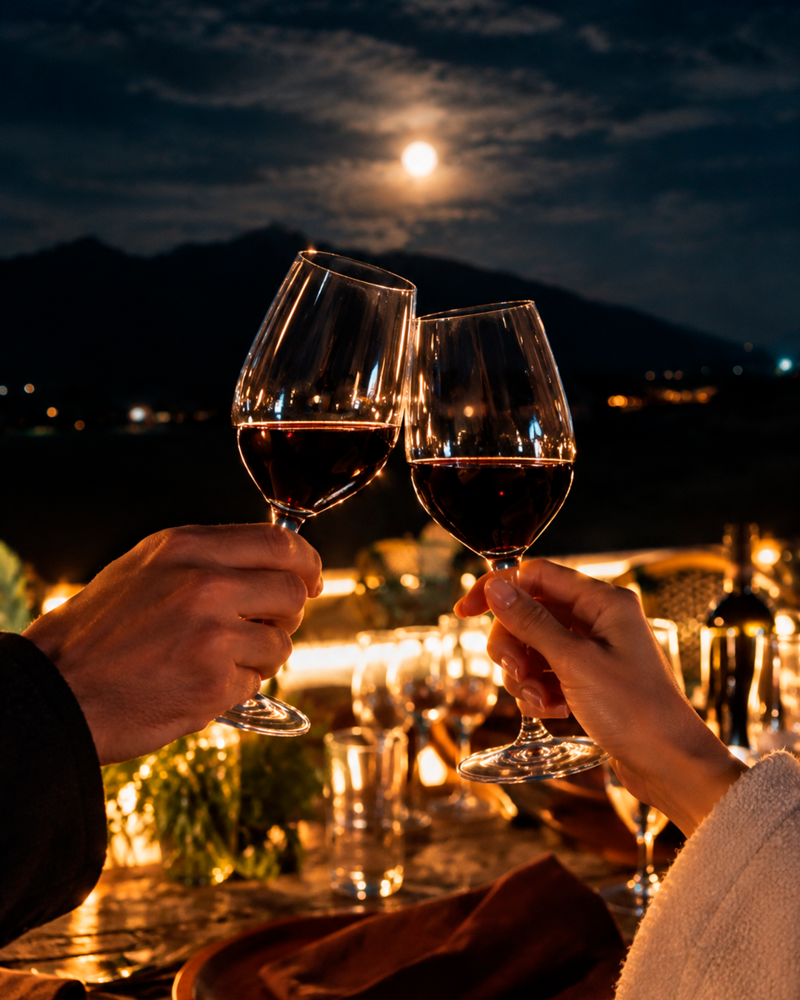
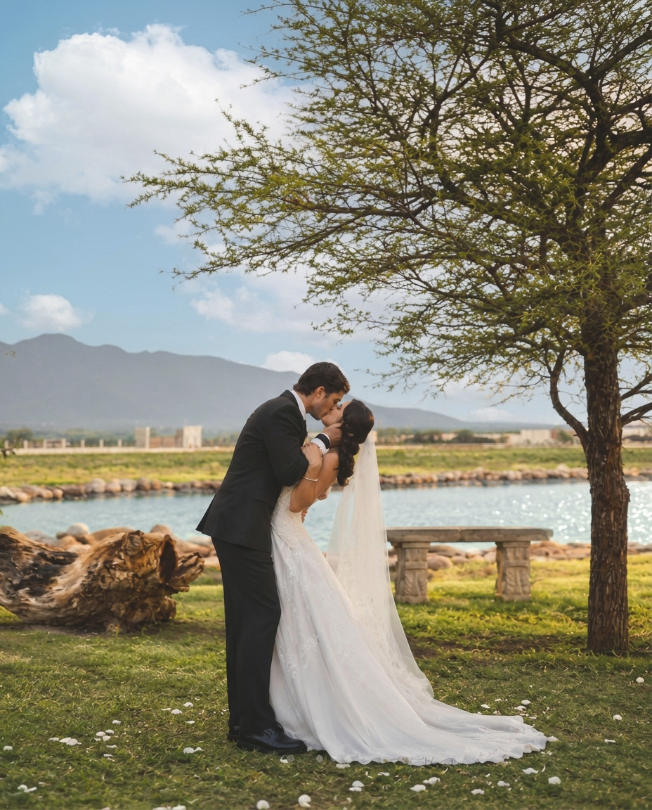

Experiencias
Momentos para
recordar
Descubre nuevas formas de conectar con la naturaleza, disfrutar del vino y compartir momentos especiales en Mata de Uva.
Vive Mata de Uva
Mucho más que un viñedo
Hay lugares que invitan a detenerse, disfrutar del paisaje y vivir el presente.
En Mata de Uva, cada experiencia es una oportunidad para descubrir nuestro entorno desde una perspectiva diferente, entre naturaleza, vino y momentos para compartir.
Cabalgatas
Conecta con la
naturaleza
Disfruta de un recorrido a caballo rodeado de paisajes naturales. Una invitación a desconectarte de la rutina, respirar aire fresco y descubrir la tranquilidad del entorno.





Volver al inicio